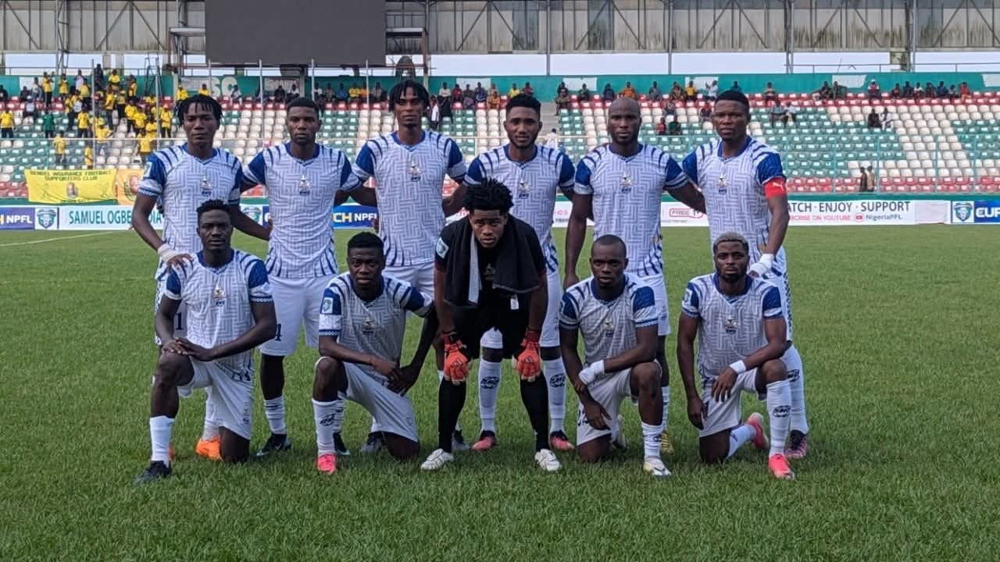

NPFL: Bendel Insurance end Rivers United’s unbeaten run as Southwest derby ends in stalemate

Bendel Insurance handed Rivers United their first defeat of the 2026/27 Nigeria Premier Football League season, winning 2-1 at the Samuel Ogbemudia Stadium in Benin City. The result ended Rivers’ nine-match unbeaten run after 10 matchdays.
Freeman Wuchirwe put the hosts ahead in the 48th minute. Rivers equalised in the 73rd when Chijioke Mbaoma ran onto Shola Oladunjoye’s through ball and finished calmly. Jonathan James scored in the 89th minute to secure the victory for Bendel. Rivers goalkeeper Clinton Andy had made three point-blank saves in a goalless first half.
Rivers remain top of the table with 17 points and a +10 goal difference, level on points with Rangers International and Nasarawa United. Rangers are second with a +5 goal difference and have two games in hand; Nasarawa are third with +3. Plateau United are fourth on 15 points. Nasarawa strengthened their position among the leading sides with a 1-0 win over Enyimba, decided by Jofrank Istifanus’ 23rd-minute goal.
Elsewhere, Ikorodu City came back from two goals down to draw 2-2 with Shooting Stars. Taofeek Otaniyi and Desmond Ojietefian scored for Shooting Stars before Donald Obiajulu struck twice for Ikorodu. Barau FC and Kwara United drew 1-1, while Niger Tornadoes, Kun Khalifat FC and Nasarawa United each recorded 1-0 wins. Wolves and Kano Pillars played out a goalless draw.
Rivers are scheduled to host Rangers at the Adokiye Amiesimaka Stadium in Port Harcourt on Sunday, 1 November. At the bottom of the table, Inter Lagos remain 20th on two points after a three-point and three-goal deduction. Ranchers Bees and Enyimba are 18th and 19th, respectively, with eight points apiece.
Source: Premium Times